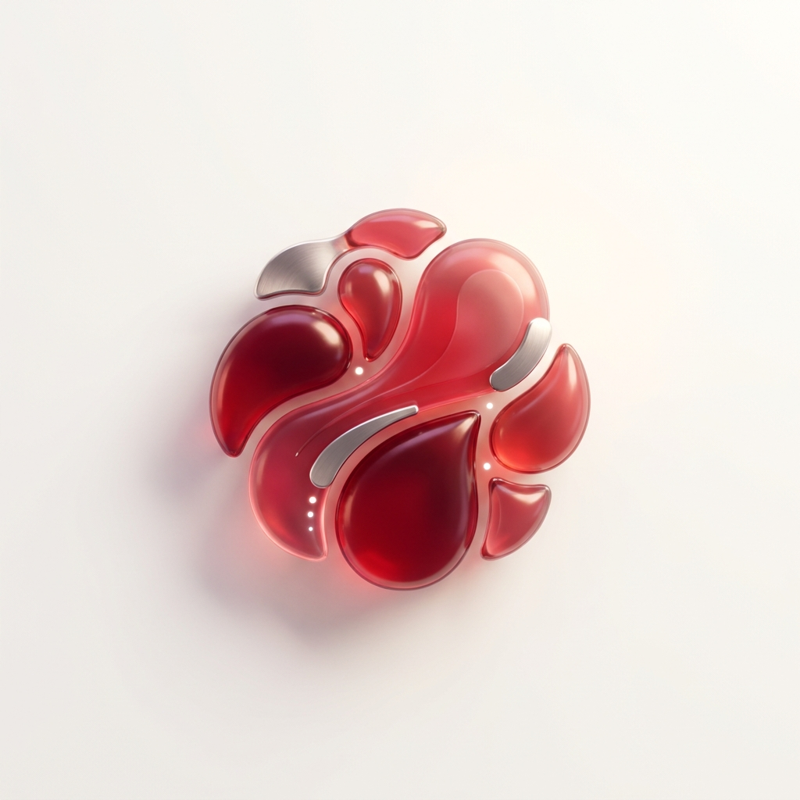
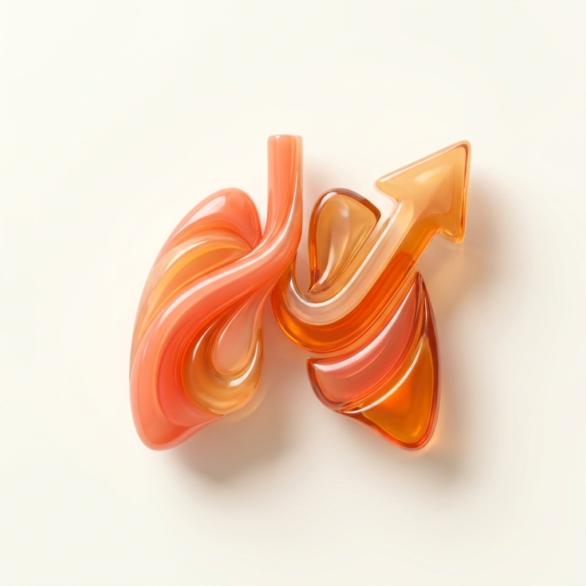
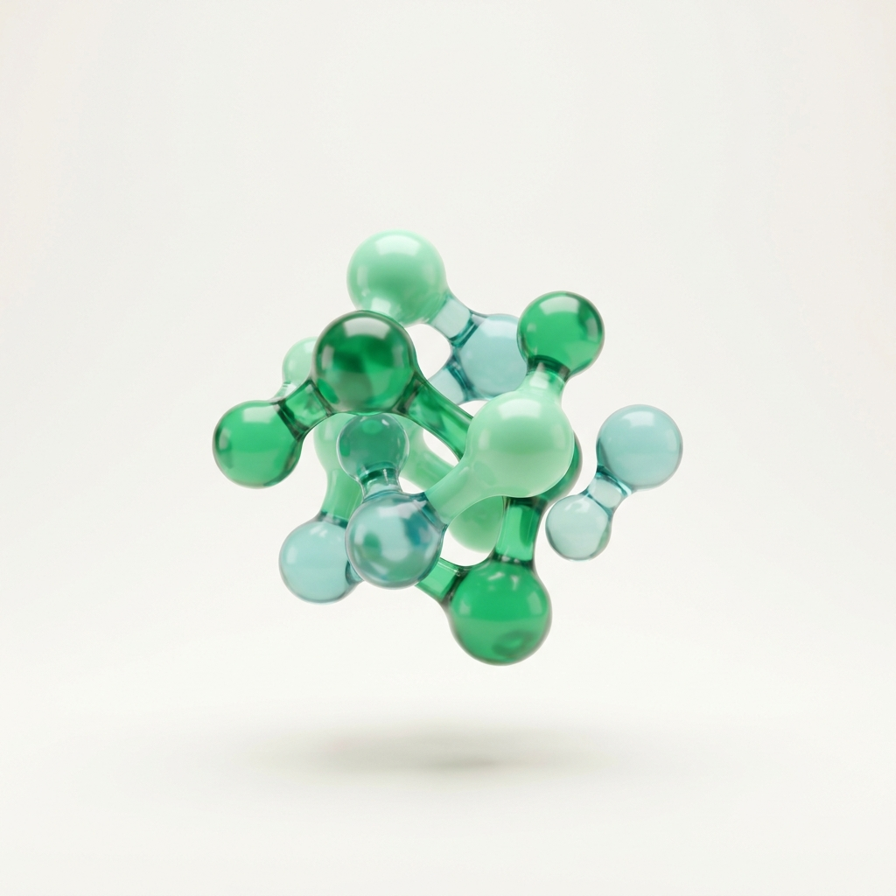

Test icons — colorful direction vs current
Modeling Biograph: each test gets a distinct, vivid 3D icon on a light background, so the grid reads colorful and varied instead of uniformly dark. These 6 are samples. If you like it, I'll do all 22 in this style and swap the whole section (the floating arc at the top too).
New — colorful, diverse

Advanced Blood PanelApoB, Lp(a), hs-CRP, 60+ more.
Full-Body MRICatches what bloodwork can't.
Brain HealthHomocysteine, omega-3, cognition.

VO₂ MaxThe strongest longevity predictor.

Metabolic FunctionInsulin and glucose, in depth.
Genetic TestingApoE to methylation, decoded.
Current — all dark

Advanced Blood PanelApoB, Lp(a), hs-CRP, 60+ more.

Full-Body MRICatches what bloodwork can't.

Brain HealthHomocysteine, omega-3, cognition.

VO₂ MaxThe strongest longevity predictor.

Metabolic FunctionInsulin and glucose, in depth.

Genetic TestingApoE to methylation, decoded.